tidybulk: An R tidy framework for modular transcriptomic data analysis
Stefano Mangiola
2025-10-03
Source:vignettes/introduction.Rmd
introduction.Rmd


tidybulk is a powerful R package designed for modular transcriptomic data analysis that brings transcriptomics to the tidyverse.
Why tidybulk?
Tidybulk provides a unified interface for comprehensive transcriptomic data analysis with seamless integration of SummarizedExperiment objects and tidyverse principles. It streamlines the entire workflow from raw data to biological insights.
Functions/utilities available
Abundance Normalization Functions
| Function | Description |
|---|---|
scale_abundance() |
Scale abundance data |
quantile_normalise_abundance() |
Quantile normalization |
adjust_abundance() |
Adjust abundance for unwanted variation |
fill_missing_abundance() |
Fill missing abundance values |
impute_missing_abundance() |
Impute missing abundance values |
Filtering and Selection Functions
| Function | Description |
|---|---|
identify_abundant() |
Identify abundant transcripts without removing them |
keep_abundant() |
Keep abundant transcripts |
keep_variable() |
Keep variable transcripts |
filterByExpr() |
Filter by expression |
Dimensionality Reduction Functions
| Function | Description |
|---|---|
reduce_dimensions() |
Reduce dimensions with PCA/MDS/tSNE/UMAP |
rotate_dimensions() |
Rotate dimensions |
remove_redundancy() |
Remove redundant features |
Clustering Functions
| Function | Description |
|---|---|
cluster_elements() |
Cluster elements with various methods |
kmeans clustering |
K-means clustering |
SNN clustering |
Shared nearest neighbor clustering |
hierarchical clustering |
Hierarchical clustering |
DBSCAN clustering |
Density-based clustering |
Differential Analysis Functions
| Function | Description |
|---|---|
test_differential_expression() |
Test differential expression with various methods |
Cellularity Analysis Functions
| Function | Description |
|---|---|
deconvolve_cellularity() |
Deconvolve cellularity with various methods |
cibersort() |
CIBERSORT analysis |
Gene Enrichment Functions
| Function | Description |
|---|---|
test_gene_enrichment() |
Test gene enrichment |
test_gene_overrepresentation() |
Test gene overrepresentation |
test_gene_rank() |
Test gene rank |
Utility Functions
| Function | Description |
|---|---|
describe_transcript() |
Describe transcript characteristics |
get_bibliography() |
Get bibliography |
resolve_complete_confounders_of_non_interest() |
Resolve confounders |
Validation and Utility Functions
| Function | Description |
|---|---|
check_if_counts_is_na() |
Check if counts contain NA values |
check_if_duplicated_genes() |
Check for duplicated genes |
check_if_wrong_input() |
Validate input data |
log10_reverse_trans() |
Log10 reverse transformation |
logit_trans() |
Logit transformation |
All functions are directly compatible with
SummarizedExperiment objects and follow tidyverse
principles for seamless integration with the tidyverse ecosystem.
Scientific Citation
Mangiola, Stefano, Ramyar Molania, Ruining Dong, Maria A. Doyle, and Anthony T. Papenfuss. 2021. “Tidybulk: An R tidy framework for modular transcriptomic data analysis.” Genome Biology 22 (42). https://doi.org/10.1186/s13059-020-02233-7
Genome Biology - tidybulk: an R tidy framework for modular transcriptomic data analysis
Installation Guide
Bioconductor
if (!requireNamespace("BiocManager")) install.packages("BiocManager")
BiocManager::install("tidybulk")Github
devtools::install_github("stemangiola/tidybulk")In this vignette we will use the airway dataset, a
SummarizedExperiment object containing RNA-seq data from an
experiment studying the effect of dexamethasone treatment on airway
smooth muscle cells. This dataset is available in the airway package.
This workflow, will use the tidySummarizedExperiment
package to manipulate the data in a tidyverse fashion. This
approach streamlines the data manipulation and analysis process, making
it more efficient and easier to understand.
##
## Attaching package: 'tidySummarizedExperiment'## The following object is masked from 'package:generics':
##
## tidyHere we will add a gene symbol column to the airway
object. This will be used to interpret the differential expression
analysis, and to deconvolve the cellularity.
library(org.Hs.eg.db)## Loading required package: AnnotationDbi##
## Attaching package: 'AnnotationDbi'## The following object is masked from 'package:dplyr':
##
## select##
library(AnnotationDbi)
# Add gene symbol and entrez
airway <-
airway |>
mutate(entrezid = mapIds(org.Hs.eg.db,
keys = gene_name,
keytype = "SYMBOL",
column = "ENTREZID",
multiVals = "first"
)) ## 'select()' returned 1:many mapping between keys and columnsComprehensive Example Pipeline
This vignette demonstrates a complete transcriptomic analysis workflow using tidybulk, with special emphasis on differential expression analysis.
Data Overview
We will use the airway dataset, a
SummarizedExperiment object containing RNA-seq data from an
experiment studying the effect of dexamethasone treatment on airway
smooth muscle cells:
airway## # A SummarizedExperiment-tibble abstraction: 509,416 × 23
## # Features=63677 | Samples=8 | Assays=counts
## .feature .sample counts SampleName cell dex albut Run avgLength
## <chr> <chr> <int> <fct> <fct> <fct> <fct> <fct> <int>
## 1 ENSG00000000003 SRR10395… 679 GSM1275862 N613… untrt untrt SRR1… 126
## 2 ENSG00000000005 SRR10395… 0 GSM1275862 N613… untrt untrt SRR1… 126
## 3 ENSG00000000419 SRR10395… 467 GSM1275862 N613… untrt untrt SRR1… 126
## 4 ENSG00000000457 SRR10395… 260 GSM1275862 N613… untrt untrt SRR1… 126
## 5 ENSG00000000460 SRR10395… 60 GSM1275862 N613… untrt untrt SRR1… 126
## 6 ENSG00000000938 SRR10395… 0 GSM1275862 N613… untrt untrt SRR1… 126
## 7 ENSG00000000971 SRR10395… 3251 GSM1275862 N613… untrt untrt SRR1… 126
## 8 ENSG00000001036 SRR10395… 1433 GSM1275862 N613… untrt untrt SRR1… 126
## 9 ENSG00000001084 SRR10395… 519 GSM1275862 N613… untrt untrt SRR1… 126
## 10 ENSG00000001167 SRR10395… 394 GSM1275862 N613… untrt untrt SRR1… 126
## # ℹ 40 more rows
## # ℹ 14 more variables: Experiment <fct>, Sample <fct>, BioSample <fct>,
## # gene_id <chr>, gene_name <chr>, entrezid <chr>, gene_biotype <chr>,
## # gene_seq_start <int>, gene_seq_end <int>, seq_name <chr>, seq_strand <int>,
## # seq_coord_system <int>, symbol <chr>, GRangesList <list>Loading tidySummarizedExperiment makes the
SummarizedExperiment objects compatible with tidyverse
tools while maintaining its SummarizedExperiment nature.
This is useful because it allows us to use the tidyverse
tools to manipulate the data.
class(airway)## [1] "RangedSummarizedExperiment"
## attr(,"package")
## [1] "SummarizedExperiment"Prepare Data for Analysis
Before analysis, we need to ensure our variables are in the correct format:
# Convert dex to factor for proper differential expression analysis
airway = airway |>
mutate(dex = as.factor(dex))Visualize Raw Counts
Visualize the distribution of raw counts before any filtering:
airway |>
ggplot(aes(counts + 1, group = .sample, color = dex)) +
geom_density() +
scale_x_log10() +
my_theme +
labs(title = "Raw counts by treatment (before any filtering)")Step 1: Data Preprocessing
Aggregate Duplicated Transcripts (optional)
Aggregate duplicated transcripts (e.g., isoforms, ensembl IDs):
Transcript aggregation is a standard bioinformatics approach for gene-level summarization.
# Aggregate duplicates
airway = airway |> aggregate_duplicates(feature = "gene_name", aggregation_function = mean)Abundance Filtering
Abundance filtering can be performed using established methods (Robinson et al. 2010; Chen et al. 2016).
Run multiple methods
# Default (simple filtering)
airway_abundant_default = airway |> keep_abundant(minimum_counts = 10, minimum_proportion = 0.5)## Warning in filterByExpr.DGEList(y, design = design, group = group, lib.size =
## lib.size, : All samples appear to belong to the same group.
# With factor_of_interest (recommended for complex designs)
airway_abundant_formula = airway |> keep_abundant(minimum_counts = 10, minimum_proportion = 0.5, factor_of_interest = dex)## Warning: The `factor_of_interest` argument of `keep_abundant()` is deprecated as of
## tidybulk 2.0.0.
## ℹ Please use the `formula_design` argument instead.
## ℹ The argument 'factor_of_interest' is deprecated and will be removed in a
## future release. Please use the 'design' or 'formula_design' argument instead.
## This warning is displayed once every 8 hours.
## Call `lifecycle::last_lifecycle_warnings()` to see where this warning was
## generated.## Warning: The `factor_of_interest` argument of `identify_abundant()` is deprecated as of
## tidybulk 2.0.0.
## ℹ Please use the `formula_design` argument instead.
## ℹ The argument 'factor_of_interest' is deprecated and will be removed in a
## future release. Please use the 'design' or 'formula_design' argument instead.
## ℹ The deprecated feature was likely used in the tidybulk package.
## Please report the issue at <https://github.com/stemangiola/tidybulk/issues>.
## This warning is displayed once every 8 hours.
## Call `lifecycle::last_lifecycle_warnings()` to see where this warning was
## generated.
# With CPM threshold (using design parameter)
airway_abundant_cpm = airway |> keep_abundant(minimum_count_per_million = 10, minimum_proportion = 0.5, factor_of_interest = dex)Compare methods
# Example: summary for default tidybulk filtering
# Before filtering
airway |> summarise(
n_features = n_distinct(.feature),
min_count = min(counts),
median_count = median(counts),
max_count = max(counts)
)## tidySummarizedExperiment says: A data frame is returned for independent data analysis.## # A tibble: 1 × 4
## n_features min_count median_count max_count
## <int> <int> <int> <int>
## 1 113276 NA NA NA
# After filtering
airway_abundant_default |> summarise(
n_features = n_distinct(.feature),
min_count = min(counts),
median_count = median(counts),
max_count = max(counts)
)## tidySummarizedExperiment says: A data frame is returned for independent data analysis.## # A tibble: 1 × 4
## n_features min_count median_count max_count
## <int> <int> <int> <int>
## 1 28240 NA NA NA
airway_abundant_formula |> summarise(
n_features = n_distinct(.feature),
min_count = min(counts),
median_count = median(counts),
max_count = max(counts)
)## tidySummarizedExperiment says: A data frame is returned for independent data analysis.## # A tibble: 1 × 4
## n_features min_count median_count max_count
## <int> <int> <int> <int>
## 1 31580 NA NA NA
airway_abundant_cpm |> summarise(
n_features = n_distinct(.feature),
min_count = min(counts),
median_count = median(counts),
max_count = max(counts)
)## tidySummarizedExperiment says: A data frame is returned for independent data analysis.## # A tibble: 1 × 4
## n_features min_count median_count max_count
## <int> <int> <int> <int>
## 1 18376 NA NA NA
# Merge all methods into a single tibble
airway_abundant_all =
bind_rows(
airway |> assay() |> as_tibble(rownames = ".feature") |> pivot_longer(cols = -.feature, names_to = ".sample", values_to = "counts") |> mutate(method = "no filter"),
airway_abundant_default |> assay() |> as_tibble(rownames = ".feature") |> pivot_longer(cols = -.feature, names_to = ".sample", values_to = "counts") |> mutate(method = "default"),
airway_abundant_formula |> assay() |> as_tibble(rownames = ".feature") |> pivot_longer(cols = -.feature, names_to = ".sample", values_to = "counts") |> mutate(method = "formula"),
airway_abundant_cpm |> assay() |> as_tibble(rownames = ".feature") |> pivot_longer(cols = -.feature, names_to = ".sample", values_to = "counts") |> mutate(method = "cpm")
)
# Density plot across methods
airway_abundant_all |>
ggplot(aes(counts + 1, group = .sample, color = method)) +
geom_density() +
scale_x_log10() +
facet_wrap(~fct_relevel(method, "no filter", "default", "formula", "cpm")) +
my_theme +
labs(title = "Counts after abundance filtering (tidybulk default)")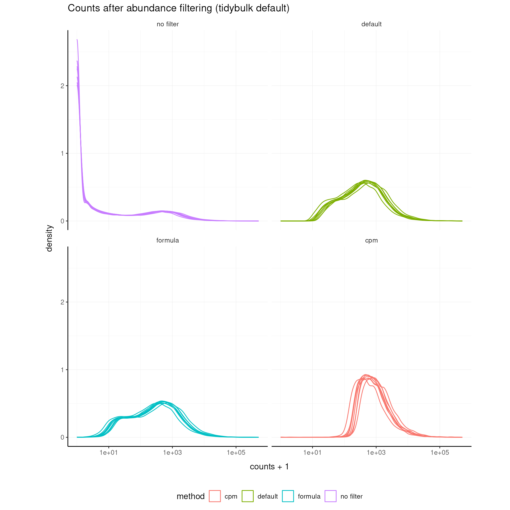
Update the airway object with the filtered data:
airway = airway_abundant_formulaTip: Use
formula_designfor complex designs, and use the CPM threshold for library-size-aware filtering.
Remove Redundant Transcripts
Redundancy removal is a standard approach for reducing highly correlated features.
airway_non_redundant =
airway |>
remove_redundancy(method = "correlation", top = 100, of_samples = FALSE) ## Getting the 100 most variable genes
# Make
airway |> summarise(
n_features = n_distinct(.feature),
min_count = min(counts),
median_count = median(counts),
max_count = max(counts)
)## tidySummarizedExperiment says: A data frame is returned for independent data analysis.## Warning in check_se_dimnames(se): tidySummarizedExperiment says: the assays in
## your SummarizedExperiment have row names, but they don't agree with the row
## names of the SummarizedExperiment object itself. It is strongly recommended to
## make the assays consistent, to avoid erroneous matching of features.## # A tibble: 1 × 4
## n_features min_count median_count max_count
## <int> <int> <int> <int>
## 1 31580 NA NA NA
# Summary statistics
airway_non_redundant |> summarise(
n_features = n_distinct(.feature),
min_count = min(counts),
median_count = median(counts),
max_count = max(counts)
)## tidySummarizedExperiment says: A data frame is returned for independent data analysis.## Warning in check_se_dimnames(se): tidySummarizedExperiment says: the assays in
## your SummarizedExperiment have row names, but they don't agree with the row
## names of the SummarizedExperiment object itself. It is strongly recommended to
## make the assays consistent, to avoid erroneous matching of features.## # A tibble: 1 × 4
## n_features min_count median_count max_count
## <int> <int> <int> <int>
## 1 31578 NA NA NA
# Plot before and after
# Merge before and after into a single tibble
airway_all = bind_rows(
airway |> assay() |> as_tibble(rownames = ".feature") |> pivot_longer(cols = -.feature, names_to = ".sample", values_to = "counts") |> mutate(method = "before"),
airway_non_redundant |> assay() |> as_tibble(rownames = ".feature") |> pivot_longer(cols = -.feature, names_to = ".sample", values_to = "counts") |> mutate(method = "after")
)
# Density plot
airway_all |>
ggplot(aes(counts + 1, group = .sample, color = method)) +
geom_density() +
scale_x_log10() +
facet_wrap(~fct_relevel(method, "before", "after")) +
my_theme +
labs(title = "Counts after removing redundant transcripts")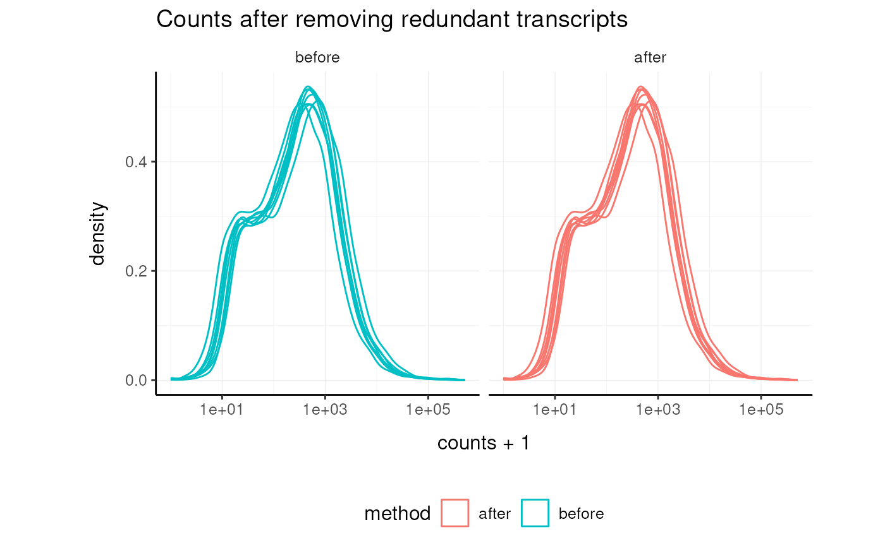
Filter Variable Transcripts
Keep only the most variable transcripts for downstream analysis.
Variance-based feature selection using edgeR methodology (Robinson et al. 2010) is used for selecting informative features.
airway_variable = airway |> keep_variable()## Getting the 500 most variable genesVisualize After Variable Filtering Variable Transcripts (optional)
# Before filtering
airway |> summarise(
n_features = n_distinct(.feature),
min_count = min(counts),
median_count = median(counts),
max_count = max(counts)
)## tidySummarizedExperiment says: A data frame is returned for independent data analysis.## Warning in check_se_dimnames(se): tidySummarizedExperiment says: the assays in
## your SummarizedExperiment have row names, but they don't agree with the row
## names of the SummarizedExperiment object itself. It is strongly recommended to
## make the assays consistent, to avoid erroneous matching of features.## # A tibble: 1 × 4
## n_features min_count median_count max_count
## <int> <int> <int> <int>
## 1 31580 NA NA NA
# After filtering
airway_variable |> summarise(
n_features = n_distinct(.feature),
min_count = min(counts),
median_count = median(counts),
max_count = max(counts)
)## tidySummarizedExperiment says: A data frame is returned for independent data analysis.## Warning in check_se_dimnames(se): tidySummarizedExperiment says: the assays in
## your SummarizedExperiment have row names, but they don't agree with the row
## names of the SummarizedExperiment object itself. It is strongly recommended to
## make the assays consistent, to avoid erroneous matching of features.## # A tibble: 1 × 4
## n_features min_count median_count max_count
## <int> <int> <int> <int>
## 1 1000 NA NA NA
# Density plot
# Merge before and after into a single tibble
airway_all = bind_rows(
airway |> assay() |> as_tibble(rownames = ".feature") |> pivot_longer(cols = -.feature, names_to = ".sample", values_to = "counts") |> mutate(method = "before"),
airway_variable |> assay() |> as_tibble(rownames = ".feature") |> pivot_longer(cols = -.feature, names_to = ".sample", values_to = "counts") |> mutate(method = "after")
)
# Density plot
airway_all |>
ggplot(aes(counts + 1, group = .sample, color = method)) +
geom_density() +
scale_x_log10() +
facet_wrap(~fct_relevel(method, "before", "after")) +
my_theme +
labs(title = "Counts after variable filtering")Scale Abundance
Scale for sequencing depth using TMM (Robinson et al. 2010), upper quartile (Bullard et al. 2010), and RLE (Anders and Huber 2010) normalization.
airway =
airway |>
scale_abundance(method = "TMM", suffix = "_tmm") |>
scale_abundance(method = "upperquartile", suffix = "_upperquartile") |>
scale_abundance(method = "RLE", suffix = "_RLE")## tidybulk says: the sample with largest library size SRR1039517 was chosen as reference for scaling
## tidybulk says: the sample with largest library size SRR1039517 was chosen as reference for scaling
## tidybulk says: the sample with largest library size SRR1039517 was chosen as reference for scalingVisualize After Scaling
## Min. 1st Qu. Median Mean 3rd Qu. Max.
## 7.38 70.50 315.25 1349.47 961.47 328812.62## Min. 1st Qu. Median Mean 3rd Qu. Max.
## 10.50 95.82 432.54 1848.78 1315.63 457450.72## Min. 1st Qu. Median Mean 3rd Qu. Max.
## 10.47 97.16 438.49 1871.36 1331.12 462648.85## Min. 1st Qu. Median Mean 3rd Qu. Max.
## 10.45 95.61 431.75 1845.81 1313.26 456675.06
# Merge all methods into a single tibble
airway_scaled_all = bind_rows(
airway |> assay("counts") |> as_tibble(rownames = ".feature") |> pivot_longer(cols = -.feature, names_to = ".sample", values_to = "counts") |> mutate(method = "no_scaling"),
airway |> assay("counts_tmm") |> as_tibble(rownames = ".feature") |> pivot_longer(cols = -.feature, names_to = ".sample", values_to = "counts") |> mutate(method = "TMM"),
airway |> assay("counts_upperquartile") |> as_tibble(rownames = ".feature") |> pivot_longer(cols = -.feature, names_to = ".sample", values_to = "counts") |> mutate(method = "upperquartile"),
airway |> assay("counts_RLE") |> as_tibble(rownames = ".feature") |> pivot_longer(cols = -.feature, names_to = ".sample", values_to = "counts") |> mutate(method = "RLE")
)
# Density plot
airway_scaled_all |>
ggplot(aes(counts + 1, group = .sample, color = method)) +
geom_density() +
scale_x_log10() +
facet_wrap(~fct_relevel(method, "no_scaling", "TMM", "upperquartile", "RLE")) +
my_theme +
labs(title = "Scaled counts by method (after scaling)")Step 2: Exploratory Data Analysis
Remove Zero-Variance Features (required for PCA)
Variance filtering is a standard preprocessing step for dimensionality reduction.
library(matrixStats)
# Remove features with zero variance across samples
airway = airway[rowVars(assay(airway)) > 0, ]Dimensionality Reduction
MDS (Kruskal 1964) using limma::plotMDS (ritchie2015limma?) and PCA (Hotelling 1933) are used for dimensionality reduction.
airway = airway |>
reduce_dimensions(method="MDS", .dims = 2)## Getting the 500 most variable genes## [1] "MDS result_df colnames: sample, 1, 2"## tidybulk says: to access the raw results do `metadata(.)$tidybulk$MDS`
airway = airway |>
reduce_dimensions(method="PCA", .dims = 2)## Getting the 500 most variable genes## Fraction of variance explained by the selected principal components## # A tibble: 2 × 2
## `Fraction of variance` PC
## <dbl> <int>
## 1 0.0654 1
## 2 0.0558 2## tidybulk says: to access the raw results do `metadata(.)$tidybulk$PCA`Visualize Dimensionality Reduction Results
# MDS plot
airway |>
pivot_sample() |>
ggplot(aes(x=`Dim1`, y=`Dim2`, color=`dex`)) +
geom_point() +
my_theme +
labs(title = "MDS Analysis")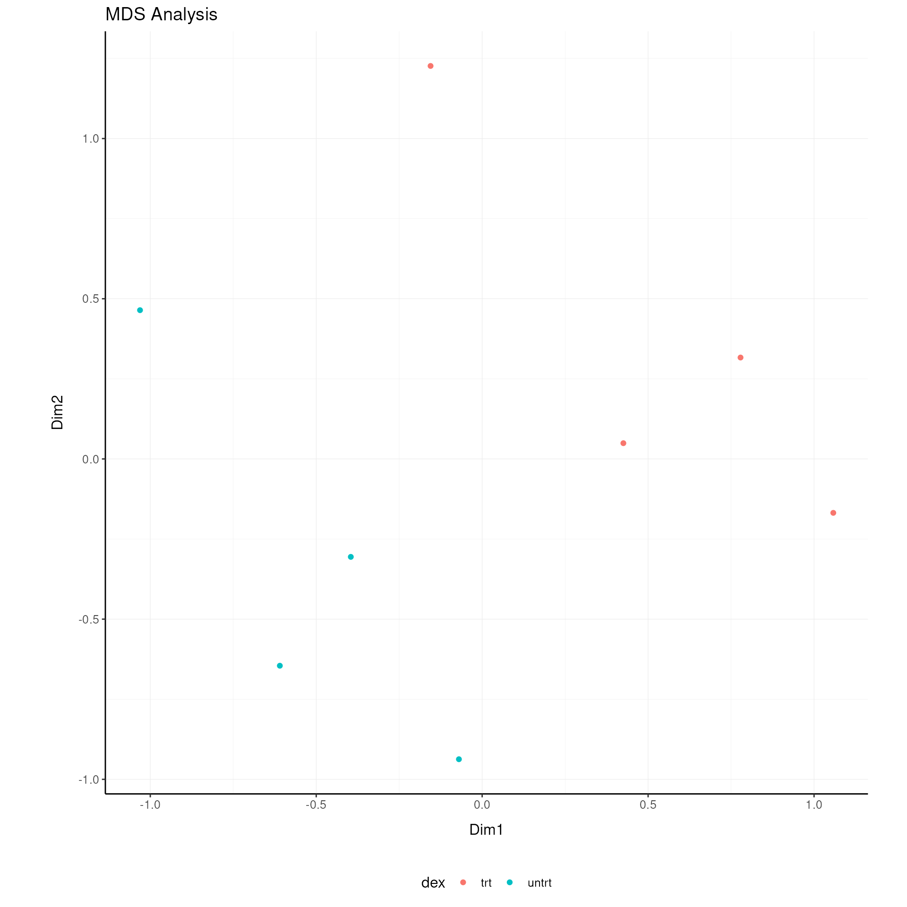
# PCA plot
airway |>
pivot_sample() |>
ggplot(aes(x=`PC1`, y=`PC2`, color=`dex`)) +
geom_point() +
my_theme +
labs(title = "PCA Analysis")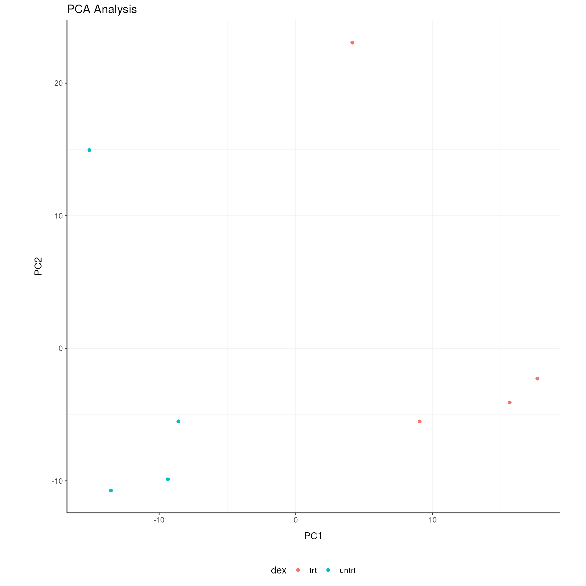
Clustering Analysis
K-means clustering (MacQueen 1967) is used for unsupervised grouping.
airway = airway |>
cluster_elements(method="kmeans", centers = 2)
# Visualize clustering
airway |>
ggplot(aes(x=`Dim1`, y=`Dim2`, color=`cluster_kmeans`)) +
geom_point() +
my_theme +
labs(title = "K-means Clustering")Step 3: Differential Expression Analysis
Basic Differential Expression
Methods:
edgeR quasi-likelihood: Quasi-likelihood F-tests for differential expression (Robinson et al. 2010; Chen et al. 2016)
edgeR robust likelihood ratio: Robust likelihood ratio tests (Chen et al. 2016)
DESeq2: Negative binomial distribution with dispersion estimation (Love et al. 2014)
limma-voom: Linear modeling with empirical Bayes moderation (Law et al. 2014)
limma-voom with sample weights: Enhanced voom with quality weights (Liu et al. 2015)
References:
Robinson et al. (2010) edgeR: a Bioconductor package for differential expression analysis
Chen et al. (2016) From reads to genes to pathways: differential expression analysis of RNA-Seq experiments using Rsubread and the edgeR quasi-likelihood pipeline
Love et al. (2014) Moderated estimation of fold change and dispersion for RNA-seq data with DESeq2
Law et al. (2014) voom: precision weights unlock linear model analysis tools for RNA-seq read counts
Liu et al. (2015) Why weight? Modelling sample and observational level variability improves power in RNA-seq analyses
# Standard differential expression analysis
airway = airway |>
# Use QL method
test_differential_expression(~ dex, method = "edgeR_quasi_likelihood", prefix = "ql__") |>
# Use edger_robust_likelihood_ratio
test_differential_expression(~ dex, method = "edger_robust_likelihood_ratio", prefix = "lr_robust__") |>
# Use DESeq2 method
test_differential_expression(~ dex, method = "DESeq2", prefix = "deseq2__") |>
# Use limma_voom
test_differential_expression(~ dex, method = "limma_voom", prefix = "voom__") |>
# Use limma_voom_sample_weights
test_differential_expression(~ dex, method = "limma_voom_sample_weights", prefix = "voom_weights__") ## Warning: The `.abundance` argument of `test_differential_abundance()` is deprecated as
## of tidybulk 2.0.0.
## ℹ Please use the `abundance` argument instead.
## ℹ The deprecated feature was likely used in the tidybulk package.
## Please report the issue at <https://github.com/stemangiola/tidybulk/issues>.
## This warning is displayed once every 8 hours.
## Call `lifecycle::last_lifecycle_warnings()` to see where this warning was
## generated.Quality Control of the Fit
It is important to check the quality of the fit. All methods produce
a fit object that can be used for quality control. The fit object
produced by each underlying method are stored in as attributes of the
airway_mini object. We can use them for example to perform
quality control of the fit.
For edgeR
Plot the biological coefficient of variation (BCV) trend. This plot is helpful to understant the dispersion of the data.
## Loading required package: limma##
## Attaching package: 'limma'## The following object is masked from 'package:BiocGenerics':
##
## plotMA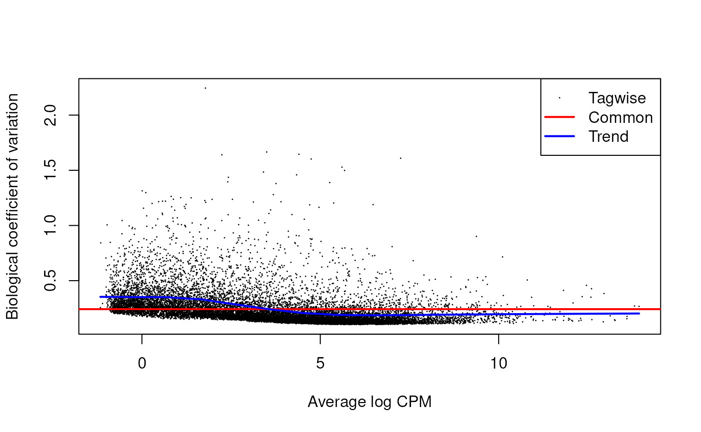
Plot the log-fold change vs mean plot.
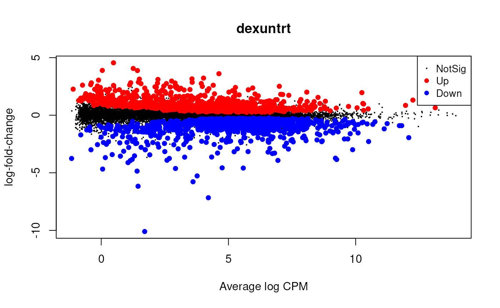
Histograms of p-values across methods
Inspection of the raw p-value histogram provides a rapid check of differential-expression results. When no gene is truly differentially expressed, the p-values follow a uniform U(0,1) distribution across the interval 0–1, so the histogram appears flat Source. In a more realistic scenario where only a subset of genes changes, this uniform background is still present but an obvious spike emerges close to zero, created by the genuine signals.
Thanks to the modularity of the tidybulk workflow, that
can multiplex different methods, we can easily compare the p-values
across methods.
airway |>
pivot_transcript() |>
select(
ql__PValue,
lr_robust__PValue,
voom__P.Value,
voom_weights__P.Value,
deseq2__pvalue
) |>
pivot_longer(everything(), names_to = "method", values_to = "pvalue") |>
ggplot(aes(x = pvalue, fill = method)) +
geom_histogram(binwidth = 0.01) +
facet_wrap(~method) +
my_theme +
labs(title = "Histogram of p-values across methods")## Warning: Removed 29 rows containing non-finite outside the scale range
## (`stat_bin()`).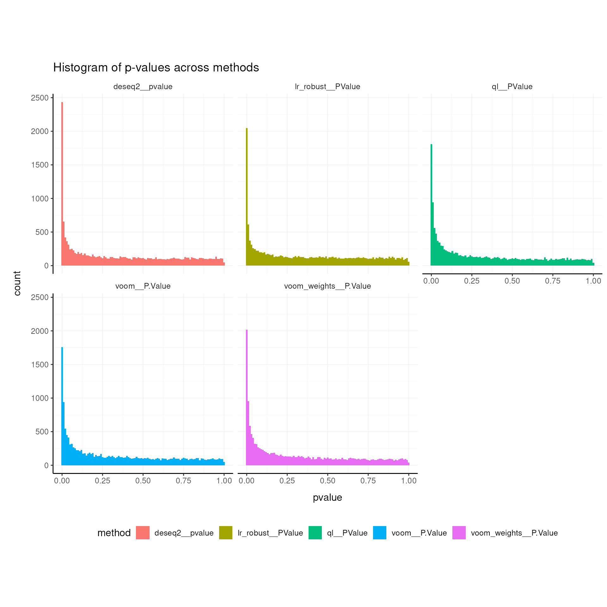
Compare Results Across Methods
# Summary statistics
airway |>
pivot_transcript() |>
select(contains("ql|lr_robust|voom|voom_weights|deseq2")) |>
select(contains("logFC")) |>
summarise(across(everything(), list(min = min, median = median, max = max), na.rm = TRUE))## Warning: There was 1 warning in `summarise()`.
## ℹ In argument: `across(...)`.
## Caused by warning:
## ! The `...` argument of `across()` is deprecated as of dplyr 1.1.0.
## Supply arguments directly to `.fns` through an anonymous function instead.
##
## # Previously
## across(a:b, mean, na.rm = TRUE)
##
## # Now
## across(a:b, \(x) mean(x, na.rm = TRUE))## # A tibble: 1 × 0Pairplot of pvalues across methods (GGpairs)
library(GGally)
airway |>
pivot_transcript() |>
select(ql__PValue, lr_robust__PValue, voom__P.Value, voom_weights__P.Value, deseq2__pvalue) |>
ggpairs(columns = 1:5, size = 0.5) +
scale_y_log10_reverse() +
scale_x_log10_reverse() +
my_theme +
labs(title = "Pairplot of p-values across methods")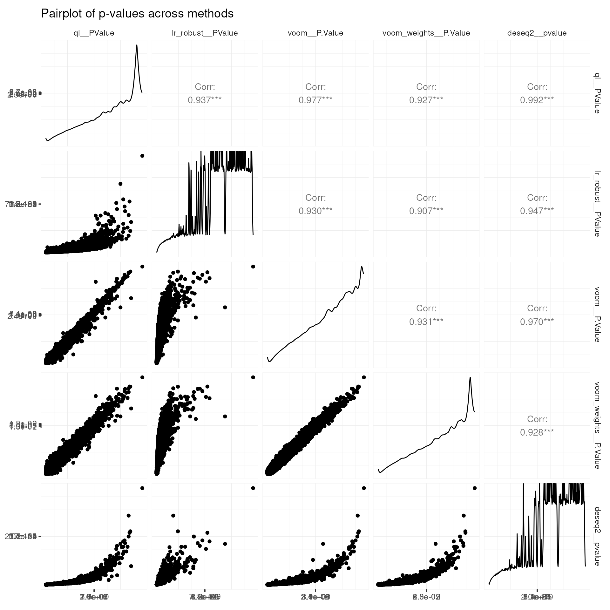
Volcano Plots for Each Method
Visualising the significance and effect size of the differential expression results as a volcano plots we appreciate that some methods have much lower p-values distributions than other methods, for the same model and data.
# Create volcano plots
airway |>
# Select the columns we want to plot
pivot_transcript() |>
select(
.feature,
ql__logFC, ql__PValue,
lr_robust__logFC, lr_robust__PValue,
voom__logFC, voom__P.Value,
voom_weights__logFC, voom_weights__P.Value,
deseq2__log2FoldChange, deseq2__pvalue
) |>
# Pivot longer to get a tidy data frame
pivot_longer(
- .feature,
names_to = c("method", "stat"),
values_to = "value", names_sep = "__"
) |>
# Harmonize column names
mutate(stat = case_when(
stat %in% c("logFC", "log2FoldChange") ~ "logFC",
stat %in% c("PValue", "pvalue", "P.Value", "p.value") ~ "PValue"
)) |>
pivot_wider(names_from = "stat", values_from = "value") |>
unnest(c(logFC, PValue)) |>
# Plot
ggplot(aes(x = logFC, y = PValue)) +
geom_point(aes(color = PValue < 0.05, size = PValue < 0.05)) +
scale_y_log10_reverse() +
scale_color_manual(values = c("TRUE" = "red", "FALSE" = "black")) +
scale_size_manual(values = c("TRUE" = 0.5, "FALSE" = 0.1)) +
facet_wrap(~method) +
my_theme +
labs(title = "Volcano Plots by Method")## Warning: Removed 29 rows containing missing values or values outside the scale range
## (`geom_point()`).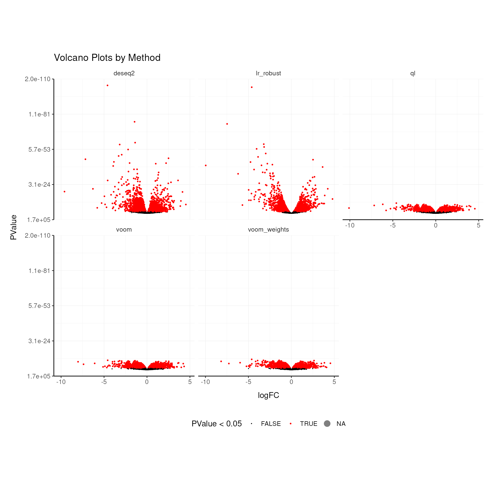
Plotting independent y-axis scales for the p-values and effect sizes allows us to compare the top genes across methods.
# Create volcano plots
airway |>
# Select the columns we want to plot
pivot_transcript() |>
select(
symbol,
ql__logFC, ql__PValue,
lr_robust__logFC, lr_robust__PValue,
voom__logFC, voom__P.Value,
voom_weights__logFC, voom_weights__P.Value,
deseq2__log2FoldChange, deseq2__pvalue
) |>
# Pivot longer to get a tidy data frame
pivot_longer(
- symbol,
names_to = c("method", "stat"),
values_to = "value", names_sep = "__"
) |>
# Harmonize column names
mutate(stat = case_when(
stat %in% c("logFC", "log2FoldChange") ~ "logFC",
stat %in% c("PValue", "pvalue", "P.Value", "p.value") ~ "PValue"
)) |>
pivot_wider(names_from = "stat", values_from = "value") |>
unnest(c(logFC, PValue)) |>
# Plot
ggplot(aes(x = logFC, y = PValue)) +
geom_point(aes(color = PValue < 0.05, size = PValue < 0.05)) +
ggrepel::geom_text_repel(aes(label = symbol), size = 2, max.overlaps = 20) +
scale_y_log10_reverse() +
scale_color_manual(values = c("TRUE" = "red", "FALSE" = "black")) +
scale_size_manual(values = c("TRUE" = 0.5, "FALSE" = 0.1)) +
facet_wrap(~method, scales = "free_y") +
my_theme +
labs(title = "Volcano Plots by Method")## Warning: Removed 29 rows containing missing values or values outside the scale range
## (`geom_point()`).## Warning: Removed 29 rows containing missing values or values outside the scale range
## (`geom_text_repel()`).## Warning: ggrepel: 15750 unlabeled data points (too many overlaps). Consider
## increasing max.overlaps## Warning: ggrepel: 15790 unlabeled data points (too many overlaps). Consider
## increasing max.overlaps## Warning: ggrepel: 15780 unlabeled data points (too many overlaps). Consider
## increasing max.overlaps## Warning: ggrepel: 15789 unlabeled data points (too many overlaps). Consider
## increasing max.overlaps## Warning: ggrepel: 15790 unlabeled data points (too many overlaps). Consider
## increasing max.overlaps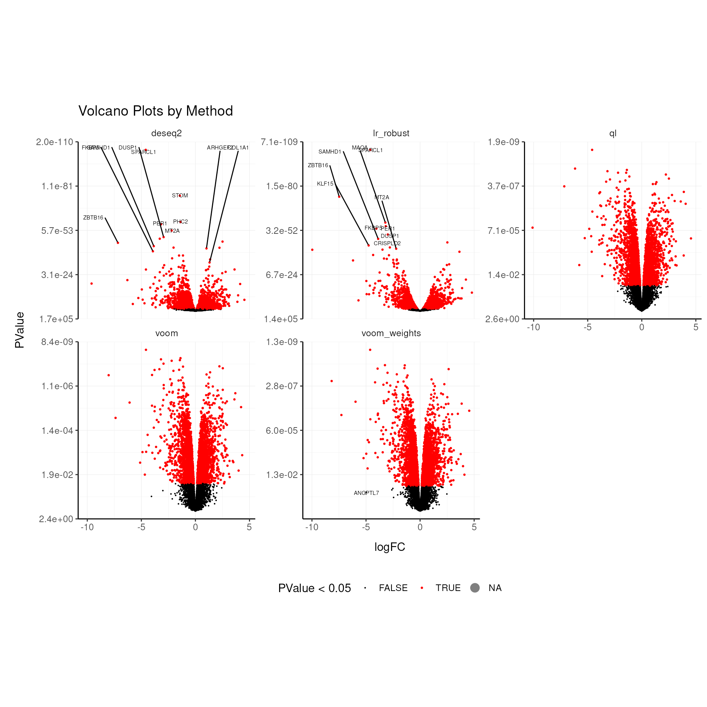
Differential Expression with Contrasts
Contrast-based differential expression analysis, is available for most methods. It is a standard statistical approach for testing specific comparisons in complex designs.
For edgeR
# Using contrasts for more complex comparisons
airway |>
test_differential_expression(
~ 0 + dex,
contrasts = c("dextrt - dexuntrt"),
method = "edgeR_quasi_likelihood",
prefix = "contrasts__"
) |>
# Print the gene statistics
pivot_transcript() |>
select(contains("contrasts"))## tidybulk says: The design column names are "dextrt, dexuntrt"## tidybulk says: to access the DE object do `metadata(.)$tidybulk$edgeR_quasi_likelihood_object`
## tidybulk says: to access the raw results (fitted GLM) do `metadata(.)$tidybulk$edgeR_quasi_likelihood_fit`## # A tibble: 15,790 × 5
## contrasts__logFC___dextrt...d…¹ contrasts__logCPM___…² contrasts__F___dextr…³
## <dbl> <dbl> <dbl>
## 1 -0.389 5.10 6.81
## 2 0.194 4.65 6.00
## 3 0.0231 3.52 0.0544
## 4 -0.125 1.52 0.219
## 5 0.432 8.13 2.92
## 6 -0.251 5.95 6.14
## 7 -0.0395 4.88 0.0338
## 8 -0.498 4.16 7.07
## 9 -0.141 3.16 1.06
## 10 -0.0533 7.08 0.0338
## # ℹ 15,780 more rows
## # ℹ abbreviated names: ¹contrasts__logFC___dextrt...dexuntrt,
## # ²contrasts__logCPM___dextrt...dexuntrt, ³contrasts__F___dextrt...dexuntrt
## # ℹ 2 more variables: contrasts__PValue___dextrt...dexuntrt <dbl>,
## # contrasts__FDR___dextrt...dexuntrt <dbl>For DESeq2
# Using contrasts for more complex comparisons
airway |>
test_differential_expression(
~ 0 + dex,
contrasts = list(c("dex", "trt", "untrt")),
method = "DESeq2",
prefix = "contrasts__"
) |>
pivot_transcript() |>
select(contains("contrasts"))## estimating size factors## estimating dispersions## gene-wise dispersion estimates## mean-dispersion relationship## final dispersion estimates## fitting model and testing## tidybulk says: to access the DE object do `metadata(.)$tidybulk$DESeq2_object`
## tidybulk says: to access the raw results (fitted GLM) do `metadata(.)$tidybulk$DESeq2_fit`## # A tibble: 15,790 × 6
## contrasts__baseMean___dex.trt…¹ contrasts__log2FoldC…² contrasts__lfcSE___d…³
## <dbl> <dbl> <dbl>
## 1 710. -0.385 0.172
## 2 521. 0.197 0.0953
## 3 238. 0.0279 0.122
## 4 58.0 -0.124 0.308
## 5 5826. 0.434 0.260
## 6 1285. -0.248 0.116
## 7 611. -0.0360 0.233
## 8 370. -0.496 0.211
## 9 184. -0.140 0.164
## 10 2820. -0.0494 0.294
## # ℹ 15,780 more rows
## # ℹ abbreviated names: ¹contrasts__baseMean___dex.trt.untrt,
## # ²contrasts__log2FoldChange___dex.trt.untrt,
## # ³contrasts__lfcSE___dex.trt.untrt
## # ℹ 3 more variables: contrasts__stat___dex.trt.untrt <dbl>,
## # contrasts__pvalue___dex.trt.untrt <dbl>,
## # contrasts__padj___dex.trt.untrt <dbl>For limma-voom
# Using contrasts for more complex comparisons
airway |>
test_differential_expression(
~ 0 + dex,
contrasts = c("dextrt - dexuntrt"),
method = "limma_voom",
prefix = "contrasts__"
) |>
pivot_transcript() |>
select(contains("contrasts"))## tidybulk says: The design column names are "dextrt, dexuntrt"## tidybulk says: to access the DE object do `metadata(.)$tidybulk$limma_voom_object`
## tidybulk says: to access the raw results (fitted GLM) do `metadata(.)$tidybulk$limma_voom_fit`## # A tibble: 15,790 × 6
## contrasts__logFC___dextrt...d…¹ contrasts__AveExpr__…² contrasts__t___dextr…³
## <dbl> <dbl> <dbl>
## 1 -0.383 5.07 -2.55
## 2 0.196 4.64 2.49
## 3 0.0318 3.51 0.324
## 4 -0.0677 1.45 -0.241
## 5 0.408 8.07 1.55
## 6 -0.252 5.94 -2.47
## 7 -0.0656 4.84 -0.305
## 8 -0.481 4.11 -2.58
## 9 -0.159 3.14 -1.14
## 10 -0.0273 7.02 -0.0956
## # ℹ 15,780 more rows
## # ℹ abbreviated names: ¹contrasts__logFC___dextrt...dexuntrt,
## # ²contrasts__AveExpr___dextrt...dexuntrt, ³contrasts__t___dextrt...dexuntrt
## # ℹ 3 more variables: contrasts__P.Value___dextrt...dexuntrt <dbl>,
## # contrasts__adj.P.Val___dextrt...dexuntrt <dbl>,
## # contrasts__B___dextrt...dexuntrt <dbl>Differential Expression with minimum fold change (TREAT method)
TREAT method (McCarthy and Smyth 2009) is used for testing significance relative to a fold-change threshold.
# Using contrasts for more complex comparisons
airway |>
test_differential_expression(
~ 0 + dex,
contrasts = c("dextrt - dexuntrt"),
method = "edgeR_quasi_likelihood",
test_above_log2_fold_change = 2,
prefix = "treat__"
) |>
# Print the gene statistics
pivot_transcript() |>
select(contains("treat"))## tidybulk says: The design column names are "dextrt, dexuntrt"## tidybulk says: to access the DE object do `metadata(.)$tidybulk$edgeR_quasi_likelihood_object`
## tidybulk says: to access the raw results (fitted GLM) do `metadata(.)$tidybulk$edgeR_quasi_likelihood_fit`## # A tibble: 15,790 × 5
## treat__logFC___dextrt...dexun…¹ treat__unshrunk.logF…² treat__logCPM___dext…³
## <dbl> <dbl> <dbl>
## 1 -0.389 -0.389 5.10
## 2 0.194 0.194 4.65
## 3 0.0231 0.0232 3.52
## 4 -0.125 -0.125 1.52
## 5 0.432 0.432 8.13
## 6 -0.251 -0.251 5.95
## 7 -0.0395 -0.0395 4.88
## 8 -0.498 -0.498 4.16
## 9 -0.141 -0.141 3.16
## 10 -0.0533 -0.0533 7.08
## # ℹ 15,780 more rows
## # ℹ abbreviated names: ¹treat__logFC___dextrt...dexuntrt,
## # ²treat__unshrunk.logFC___dextrt...dexuntrt,
## # ³treat__logCPM___dextrt...dexuntrt
## # ℹ 2 more variables: treat__PValue___dextrt...dexuntrt <dbl>,
## # treat__FDR___dextrt...dexuntrt <dbl>Mixed Models for Complex Designs
glmmSeq (Ma et al. 2020) is used for generalized linear mixed models for RNA-seq data.
# Using glmmSeq for mixed models
airway |>
keep_abundant(formula_design = ~ dex) |>
# Select 100 genes in the interest of execution time
_[1:100,] |>
# Fit model
test_differential_expression(
~ dex + (1|cell),
method = "glmmseq_lme4",
cores = 1,
prefix = "glmmseq__"
) ##
## n = 8 samples, 4 individuals## Time difference of 1.271983 mins## tidybulk says: to access the DE object do
## `metadata(.)$tidybulk$glmmseq_lme4_object`## tidybulk says: to access the raw results (fitted GLM) do
## `metadata(.)$tidybulk$glmmseq_lme4_fit`## # A SummarizedExperiment-tibble abstraction: 800 × 87
## # Features=100 | Samples=8 | Assays=counts, counts_tmm, counts_upperquartile,
## # counts_RLE
## .feature .sample counts counts_tmm counts_upperquartile counts_RLE SampleName
## <chr> <chr> <int> <dbl> <dbl> <dbl> <fct>
## 1 TSPAN6 SRR103… 679 937. 972. 930. GSM1275862
## 2 DPM1 SRR103… 467 644. 669. 640. GSM1275862
## 3 SCYL3 SRR103… 260 359. 372. 356. GSM1275862
## 4 C1orf112 SRR103… 60 82.8 85.9 82.2 GSM1275862
## 5 CFH SRR103… 3251 4485. 4654. 4454. GSM1275862
## 6 FUCA2 SRR103… 1433 1977. 2052. 1963. GSM1275862
## 7 GCLC SRR103… 519 716. 743. 711. GSM1275862
## 8 NFYA SRR103… 394 544. 564. 540. GSM1275862
## 9 STPG1 SRR103… 172 237. 246. 236. GSM1275862
## 10 NIPAL3 SRR103… 2112 2914. 3024. 2893. GSM1275862
## # ℹ 40 more rows
## # ℹ 80 more variables: cell <fct>, dex <fct>, albut <fct>, Run <fct>,
## # avgLength <int>, Experiment <fct>, Sample <fct>, BioSample <fct>,
## # TMM <dbl>, multiplier <dbl>, Dim1 <dbl>, Dim2 <dbl>, PC1 <dbl>, PC2 <dbl>,
## # cluster_kmeans <fct>, gene_name <chr>, gene_seq_end <dbl>,
## # gene_seq_start <dbl>, seq_coord_system <dbl>, seq_strand <dbl>,
## # entrezid <chr>, gene_biotype <chr>, gene_id <chr>, seq_name <chr>, …
airway |>
pivot_transcript() ## # A tibble: 15,790 × 42
## .feature gene_name gene_seq_end gene_seq_start seq_coord_system seq_strand
## <chr> <chr> <dbl> <dbl> <dbl> <dbl>
## 1 TSPAN6 TSPAN6 99894988 99883667 NA -1
## 2 DPM1 DPM1 49575092 49551404 NA -1
## 3 SCYL3 SCYL3 169863408 169818772 NA -1
## 4 C1orf112 C1orf112 169823221 169631245 NA 1
## 5 CFH CFH 196716634 196621008 NA 1
## 6 FUCA2 FUCA2 143832827 143815948 NA -1
## 7 GCLC GCLC 53481768 53362139 NA -1
## 8 NFYA NFYA 41067715 41040684 NA 1
## 9 STPG1 STPG1 24743424 24683489 NA -1
## 10 NIPAL3 NIPAL3 24799466 24742284 NA 1
## # ℹ 15,780 more rows
## # ℹ 36 more variables: entrezid <chr>, gene_biotype <chr>, gene_id <chr>,
## # seq_name <chr>, symbol <chr>, merged_transcripts <int>, .abundant <lgl>,
## # ql__logFC <dbl>, ql__logCPM <dbl>, ql__F <dbl>, ql__PValue <dbl>,
## # ql__FDR <dbl>, lr_robust__logFC <dbl>, lr_robust__logCPM <dbl>,
## # lr_robust__LR <dbl>, lr_robust__PValue <dbl>, lr_robust__FDR <dbl>,
## # deseq2__baseMean <dbl>, deseq2__log2FoldChange <dbl>, …Gene Description
With tidybulk, retrieving gene descriptions is straightforward, making it easy to enhance the interpretability of your differential expression results.
# Add gene descriptions using the original SummarizedExperiment
airway |>
describe_transcript() |>
# Filter top significant genes
filter(ql__FDR < 0.05) |>
# Print the gene statistics
pivot_transcript() |>
filter(description |> is.na() |> not()) |>
select(.feature, description, contains("ql")) |>
head()## ## ## # A tibble: 6 × 7
## .feature description ql__logFC ql__logCPM ql__F ql__PValue ql__FDR
## <chr> <chr> <dbl> <dbl> <dbl> <dbl> <dbl>
## 1 LASP1 LIM and SH3 protein 1 -0.389 8.43 16.4 0.00299 0.0316
## 2 KLHL13 kelch like family memb… 0.930 4.20 31.3 0.000361 0.00892
## 3 CFLAR CASP8 and FADD like ap… -1.17 6.94 64.7 0.0000237 0.00232
## 4 MTMR7 myotubularin related p… -0.967 0.387 17.7 0.00240 0.0280
## 5 ARF5 ARF GTPase 5 -0.358 5.88 17.1 0.00266 0.0295
## 6 KDM1A lysine demethylase 1A 0.310 5.90 20.0 0.00161 0.0217Step 4: Batch Effect Correction
ComBat-seq (Zhang et al. 2020) is used for batch effect correction in RNA-seq data.
# Adjust for batch effects
airway = airway |>
adjust_abundance(
.factor_unwanted = cell,
.factor_of_interest = dex,
method = "combat_seq",
abundance = "counts_tmm"
)## Found 4 batches
## Using null model in ComBat-seq.
## Adjusting for 1 covariate(s) or covariate level(s)
## Estimating dispersions
## Fitting the GLM model
## Shrinkage off - using GLM estimates for parameters
## Adjusting the data
# Scatter plot of adjusted vs unadjusted
airway |>
# Subset genes to speed up plotting
_[1:100,] |>
select(symbol, .sample, counts_tmm, counts_tmm_adjusted) |>
ggplot(aes(x = counts_tmm + 1, y = counts_tmm_adjusted + 1)) +
geom_point(aes(color = .sample), size = 0.1) +
ggrepel::geom_text_repel(aes(label = symbol), size = 2, max.overlaps = 20) +
scale_x_log10() +
scale_y_log10() +
my_theme +
labs(title = "Scatter plot of adjusted vs unadjusted")## tidySummarizedExperiment says: Key columns are missing. A data frame is returned for independent data analysis.## Warning: ggrepel: 789 unlabeled data points (too many overlaps). Consider
## increasing max.overlapsStep 5: Gene Enrichment Analysis
Gene Set Enrichment Analysis (GSEA) (Subramanian et al. 2005) is used for gene set enrichment.
# Run gene rank enrichment (GSEA style)
gene_rank_res =
airway |>
# Filter for genes with entrez IDs
filter(!entrezid |> is.na()) |>
aggregate_duplicates(feature = "entrezid") |>
# Test gene rank
test_gene_rank(
.entrez = entrezid,
.arrange_desc = lr_robust__logFC,
species = "Homo sapiens",
gene_sets = c("H", "C2", "C5")
)## ## using 'fgsea' for GSEA analysis, please cite Korotkevich et al (2019).## preparing geneSet collections...## GSEA analysis...## leading edge analysis...## done...## using 'fgsea' for GSEA analysis, please cite Korotkevich et al (2019).## preparing geneSet collections...## GSEA analysis...## leading edge analysis...## done...## using 'fgsea' for GSEA analysis, please cite Korotkevich et al (2019).## preparing geneSet collections...## GSEA analysis...## leading edge analysis...## done...## Warning: There was 1 warning in `mutate()`.
## ℹ In argument: `fit = map(...)`.
## Caused by warning in `fgseaMultilevel()`:
## ! For some pathways, in reality P-values are less than 1e-10. You can set the `eps` argument to zero for better estimation.
# Inspect significant gene sets (example for C2 collection)
gene_rank_res |>
filter(gs_collection == "C2") |>
dplyr::select(-fit) |>
unnest(test) |>
filter(p.adjust < 0.05)## # A tibble: 36 × 13
## gs_collection idx_for_plotting ID Description setSize enrichmentScore
## <chr> <int> <chr> <chr> <int> <dbl>
## 1 C2 1 CHEN_LVAD… CHEN_LVAD_… 83 -0.726
## 2 C2 2 VECCHI_GA… VECCHI_GAS… 205 -0.574
## 3 C2 3 SHEDDEN_L… SHEDDEN_LU… 154 -0.554
## 4 C2 4 BOQUEST_S… BOQUEST_ST… 374 -0.436
## 5 C2 5 FEKIR_HEP… FEKIR_HEPA… 27 -0.841
## 6 C2 6 HOSHIDA_L… HOSHIDA_LI… 187 -0.505
## 7 C2 7 CHARAFE_B… CHARAFE_BR… 387 -0.418
## 8 C2 8 ZWANG_CLA… ZWANG_CLAS… 186 -0.483
## 9 C2 9 YAO_TEMPO… YAO_TEMPOR… 55 -0.656
## 10 C2 10 SCHAEFFER… SCHAEFFER_… 277 -0.420
## # ℹ 26 more rows
## # ℹ 7 more variables: NES <dbl>, pvalue <dbl>, p.adjust <dbl>, qvalue <dbl>,
## # rank <dbl>, leading_edge <chr>, core_enrichment <chr>Visualize enrichment
## enrichplot v1.29.2 Learn more at https://yulab-smu.top/contribution-knowledge-mining/
##
## Please cite:
##
## Guangchuang Yu, Fei Li, Yide Qin, Xiaochen Bo, Yibo Wu and Shengqi
## Wang. GOSemSim: an R package for measuring semantic similarity among GO
## terms and gene products. Bioinformatics. 2010, 26(7):976-978##
## Attaching package: 'enrichplot'## The following object is masked from 'package:GGally':
##
## ggtable
library(patchwork)
gene_rank_res |>
unnest(test) |>
head() |>
mutate(plot = pmap(
list(fit, ID, idx_for_plotting, p.adjust),
~ enrichplot::gseaplot2(
..1, geneSetID = ..3,
title = sprintf("%s \nadj pvalue %s", ..2, round(..4, 2)),
base_size = 6, rel_heights = c(1.5, 0.5), subplots = c(1, 2)
)
)) |>
pull(plot) ## Warning: There was 1 warning in `mutate()`.
## ℹ In argument: `plot = pmap(...)`.
## Caused by warning:
## ! `aes_()` was deprecated in ggplot2 3.0.0.
## ℹ Please use tidy evaluation idioms with `aes()`
## ℹ The deprecated feature was likely used in the enrichplot package.
## Please report the issue at
## <https://github.com/GuangchuangYu/enrichplot/issues>.## [[1]]##
## [[2]]##
## [[3]]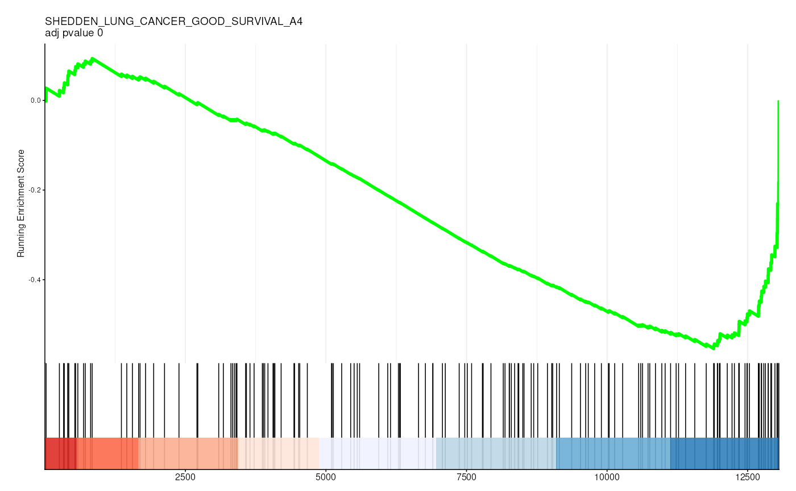
##
## [[4]]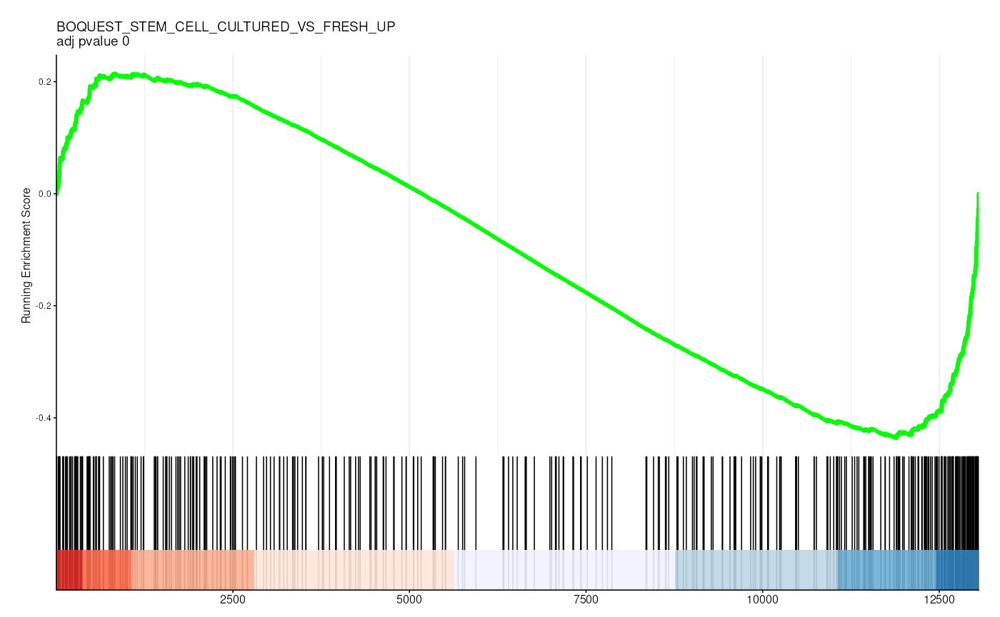
##
## [[5]]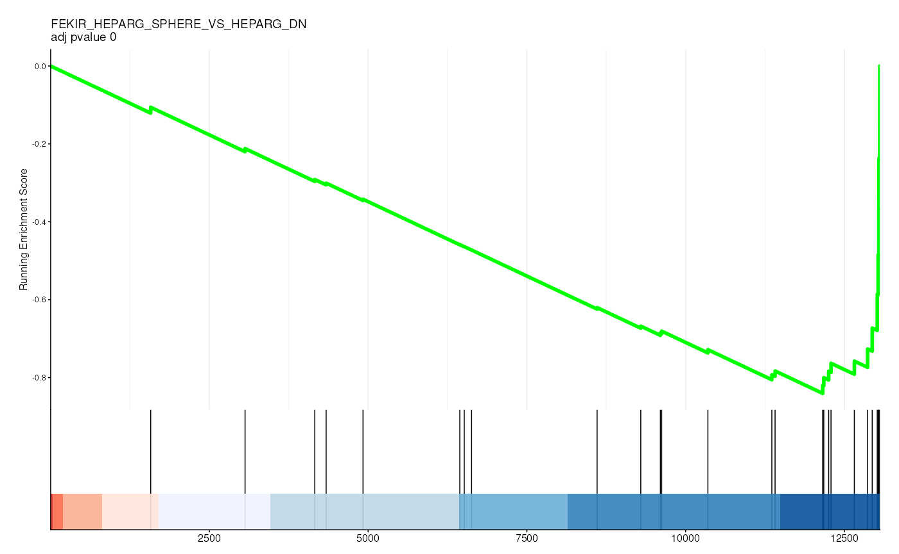
##
## [[6]]
detach("package:enrichplot", unload = TRUE)## Warning: 'enrichplot' namespace cannot be unloaded:
## namespace 'enrichplot' is imported by 'clusterProfiler' so cannot be unloadedGene Ontology overrepresentation analysis (Ashburner et al. 2000) is used for functional enrichment.
# Test gene overrepresentation
airway_overrep =
airway |>
# Label genes to test overrepresentation of
mutate(genes_to_test = ql__FDR < 0.05) |>
# Filter for genes with entrez IDs
filter(!entrezid |> is.na()) |>
test_gene_overrepresentation(
.entrez = entrezid,
species = "Homo sapiens",
.do_test = genes_to_test,
gene_sets = c("H", "C2", "C5")
)
airway_overrep## # A tibble: 5,417 × 13
## gs_collection ID Description GeneRatio BgRatio RichFactor FoldEnrichment
## <chr> <chr> <chr> <chr> <chr> <dbl> <dbl>
## 1 C2 PASINI… PASINI_SUZ… 85/1747 316/22… 0.269 3.45
## 2 C2 CHARAF… CHARAFE_BR… 102/1747 465/22… 0.219 2.81
## 3 C2 CHARAF… CHARAFE_BR… 100/1747 456/22… 0.219 2.81
## 4 C2 REN_AL… REN_ALVEOL… 93/1747 407/22… 0.229 2.93
## 5 C2 CHEN_L… CHEN_LVAD_… 40/1747 102/22… 0.392 5.02
## 6 C2 ONDER_… ONDER_CDH1… 66/1747 257/22… 0.257 3.29
## 7 C2 LIU_PR… LIU_PROSTA… 98/1747 495/22… 0.198 2.54
## 8 C2 BOQUES… BOQUEST_ST… 89/1747 428/22… 0.208 2.66
## 9 C2 LU_AGI… LU_AGING_B… 65/1747 264/22… 0.246 3.15
## 10 C2 LIM_MA… LIM_MAMMAR… 94/1747 479/22… 0.196 2.51
## # ℹ 5,407 more rows
## # ℹ 6 more variables: zScore <dbl>, pvalue <dbl>, p.adjust <dbl>, qvalue <dbl>,
## # Count <int>, entrez <list>EGSEA (Alhamdoosh et al. 2017) is used for ensemble gene set enrichment analysis. EGSEA is a method that combines multiple gene set enrichment analysis methods to provide a more robust and comprehensive analysis of gene set enrichment. It creates a web-based interactive tool that allows you to explore the results of the gene set enrichment analysis.
library(EGSEA)
# Test gene enrichment
airway |>
# Filter for genes with entrez IDs
filter(!entrezid |> is.na()) |>
aggregate_duplicates(feature = "entrezid") |>
# Test gene enrichment
test_gene_enrichment(
.formula = ~dex,
.entrez = entrezid,
species = "human",
gene_sets = "h",
methods = c("roast"), # Use a more robust method
cores = 2
)
detach("package:EGSEA", unload = TRUE)Step 6: Cellularity Analysis
CIBERSORT (Newman et al. 2015) is used for cell type deconvolution.
Cellularity deconvolution is a standard approach for estimating the cellular composition of a sample.
Available Deconvolution Methods
The tidybulk package provides several methods for
deconvolution:
-
CIBERSORT (Newman et al. 2015): Uses
support vector regression to deconvolve cell type proportions. Requires
the
class,e1071, andpreprocessCorepackages. - LLSR (Newman et al. 2015): Linear Least Squares Regression for deconvolution.
- EPIC (racle2017epic?): Uses a reference-based approach to estimate cell fractions.
- MCP-counter (becht2016mcp?): Quantifies the abundance of immune and stromal cell populations.
- quanTIseq (finotello2019quantiseq?): A computational framework for inferring the immune contexture of tumors.
- xCell (aran2017xcell?): Performs cell type enrichment analysis.
Example Usage
airway =
airway |>
filter(!symbol |> is.na()) |>
deconvolve_cellularity(method = "cibersort", cores = 1, prefix = "cibersort__", feature_column = "symbol") For the rest of the methods, you need to install the
immunedeconv package.
if (!requireNamespace("immunedeconv")) BiocManager::install("immunedeconv")
airway =
airway |>
# Example using LLSR
deconvolve_cellularity(method = "llsr", prefix = "llsr__", feature_column = "symbol") |>
# Example using EPIC
deconvolve_cellularity(method = "epic", cores = 1, prefix = "epic__") |>
# Example using MCP-counter
deconvolve_cellularity(method = "mcp_counter", cores = 1, prefix = "mcp__") |>
# Example using quanTIseq
deconvolve_cellularity(method = "quantiseq", cores = 1, prefix = "quantiseq__") |>
# Example using xCell
deconvolve_cellularity(method = "xcell", cores = 1, prefix = "xcell__")Plotting Results
Visualize the cell type proportions as a stacked barplot for each method:
# Visualize CIBERSORT results
airway |>
pivot_sample() |>
dplyr::select(.sample, contains("cibersort__")) |>
pivot_longer(cols = -1, names_to = "Cell_type_inferred", values_to = "proportion") |>
ggplot(aes(x = .sample, y = proportion, fill = Cell_type_inferred)) +
geom_bar(stat = "identity") +
scale_y_continuous(labels = scales::percent) +
my_theme +
theme(axis.text.x = element_text(angle = 90, hjust = 1, vjust = 0.5)) +
labs(title = "CIBERSORT Cell Type Proportions")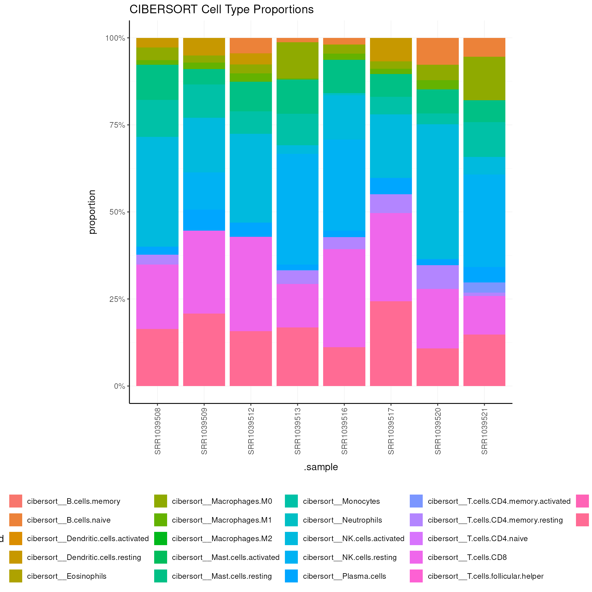
# Repeat similar plotting for LLSR, EPIC, MCP-counter, quanTIseq, and xCell
airway |>
pivot_sample() |>
select(.sample, contains("llsr__")) |>
pivot_longer(cols = -1, names_to = "Cell_type_inferred", values_to = "proportion") |>
ggplot(aes(x = .sample, y = proportion, fill = Cell_type_inferred)) +
geom_bar(stat = "identity") +
scale_y_continuous(labels = scales::percent) +
my_theme +
theme(axis.text.x = element_text(angle = 90, hjust = 1, vjust = 0.5)) +
labs(title = "LLSR Cell Type Proportions")
airway |>
pivot_sample() |>
select(.sample, contains("epic__")) |>
pivot_longer(cols = -1, names_to = "Cell_type_inferred", values_to = "proportion") |>
ggplot(aes(x = .sample, y = proportion, fill = Cell_type_inferred)) +
geom_bar(stat = "identity") +
scale_y_continuous(labels = scales::percent) +
my_theme +
theme(axis.text.x = element_text(angle = 90, hjust = 1, vjust = 0.5)) +
labs(title = "EPIC Cell Type Proportions")
airway |>
pivot_sample() |>
select(.sample, contains("mcp__")) |>
pivot_longer(cols = -1, names_to = "Cell_type_inferred", values_to = "proportion") |>
ggplot(aes(x = .sample, y = proportion, fill = Cell_type_inferred)) +
geom_bar(stat = "identity") +
scale_y_continuous(labels = scales::percent) +
my_theme +
theme(axis.text.x = element_text(angle = 90, hjust = 1, vjust = 0.5)) +
labs(title = "MCP-counter Cell Type Proportions")
airway |>
pivot_sample() |>
select(.sample, contains("quantiseq__")) |>
pivot_longer(cols = -1, names_to = "Cell_type_inferred", values_to = "proportion") |>
ggplot(aes(x = .sample, y = proportion, fill = Cell_type_inferred)) +
geom_bar(stat = "identity") +
scale_y_continuous(labels = scales::percent) +
my_theme +
theme(axis.text.x = element_text(angle = 90, hjust = 1, vjust = 0.5)) +
labs(title = "quanTIseq Cell Type Proportions")
airway |>
pivot_sample() |>
select(.sample, contains("xcell__")) |>
pivot_longer(cols = -1, names_to = "Cell_type_inferred", values_to = "proportion") |>
ggplot(aes(x = .sample, y = proportion, fill = Cell_type_inferred)) +
geom_bar(stat = "identity") +
scale_y_continuous(labels = scales::percent) +
my_theme +
theme(axis.text.x = element_text(angle = 90, hjust = 1, vjust = 0.5)) +
labs(title = "xCell Cell Type Proportions")Bibliography
tidybulk allows you to get the bibliography of all
methods used in our workflow.
# Get bibliography of all methods used in our workflow
airway |> get_bibliography()## @Article{tidybulk,
## title = {tidybulk: an R tidy framework for modular transcriptomic data analysis},
## author = {Stefano Mangiola and Ramyar Molania and Ruining Dong and Maria A. Doyle & Anthony T. Papenfuss},
## journal = {Genome Biology},
## year = {2021},
## volume = {22},
## number = {42},
## url = {https://genomebiology.biomedcentral.com/articles/10.1186/s13059-020-02233-7},
## }
## @article{wickham2019welcome,
## title={Welcome to the Tidyverse},
## author={Wickham, Hadley and Averick, Mara and Bryan, Jennifer and Chang, Winston and McGowan, Lucy D'Agostino and Francois, Romain and Grolemund, Garrett and Hayes, Alex and Henry, Lionel and Hester, Jim and others},
## journal={Journal of Open Source Software},
## volume={4},
## number={43},
## pages={1686},
## year={2019}
## }
## @article{robinson2010edger,
## title={edgeR: a Bioconductor package for differential expression analysis of digital gene expression data},
## author={Robinson, Mark D and McCarthy, Davis J and Smyth, Gordon K},
## journal={Bioinformatics},
## volume={26},
## number={1},
## pages={139--140},
## year={2010},
## publisher={Oxford University Press}
## }
## @article{robinson2010scaling,
## title={A scaling normalization method for differential expression analysis of RNA-seq data},
## author={Robinson, Mark D and Oshlack, Alicia},
## journal={Genome biology},
## volume={11},
## number={3},
## pages={1--9},
## year={2010},
## publisher={BioMed Central}
## }
## @incollection{smyth2005limma,
## title={Limma: linear models for microarray data},
## author={Smyth, Gordon K},
## booktitle={Bioinformatics and computational biology solutions using R and Bioconductor},
## pages={397--420},
## year={2005},
## publisher={Springer}
## }
## @Manual{,
## title = {R: A Language and Environment for Statistical Computing},
## author = {{R Core Team}},
## organization = {R Foundation for Statistical Computing},
## address = {Vienna, Austria},
## year = {2020},
## url = {https://www.R-project.org/},
## }
## @article{lund2012detecting,
## title={Detecting differential expression in RNA-sequence data using quasi-likelihood with shrunken dispersion estimates},
## author={Lund, Steven P and Nettleton, Dan and McCarthy, Davis J and Smyth, Gordon K},
## journal={Statistical applications in genetics and molecular biology},
## volume={11},
## number={5},
## year={2012},
## publisher={De Gruyter}
## }
## @article{zhou2014robustly,
## title={Robustly detecting differential expression in RNA sequencing data using observation weights},
## author={Zhou, Xiaobei and Lindsay, Helen and Robinson, Mark D},
## journal={Nucleic acids research},
## volume={42},
## number={11},
## pages={e91--e91},
## year={2014},
## publisher={Oxford University Press}
## }
## @article{love2014moderated,
## title={Moderated estimation of fold change and dispersion for RNA-seq data with DESeq2},
## author={Love, Michael I and Huber, Wolfgang and Anders, Simon},
## journal={Genome biology},
## volume={15},
## number={12},
## pages={550},
## year={2014},
## publisher={Springer}
## }
## @article{law2014voom,
## title={voom: Precision weights unlock linear model analysis tools for RNA-seq read counts},
## author={Law, Charity W and Chen, Yunshun and Shi, Wei and Smyth, Gordon K},
## journal={Genome biology},
## volume={15},
## number={2},
## pages={R29},
## year={2014},
## publisher={Springer}
## }
## @article{liu2015weight,
## title={Why weight? Modelling sample and observational level variability improves power in RNA-seq analyses},
## author={Liu, Ruijie and Holik, Aliaksei Z and Su, Shian and Jansz, Natasha and Chen, Kelan and Leong, Huei San and Blewitt, Marnie E and Asselin-Labat, Marie-Liesse and Smyth, Gordon K and Ritchie, Matthew E},
## journal={Nucleic acids research},
## volume={43},
## number={15},
## pages={e97--e97},
## year={2015},
## publisher={Oxford University Press}
## }
## @article{leek2012sva,
## title={The sva package for removing batch effects and other unwanted variation in high-throughput experiments},
## author={Leek, Jeffrey T and Johnson, W Evan and Parker, Hilary S and Jaffe, Andrew E and Storey, John D},
## journal={Bioinformatics},
## volume={28},
## number={6},
## pages={882--883},
## year={2012},
## publisher={Oxford University Press}
## }
## @article{newman2015robust,
## title={Robust enumeration of cell subsets from tissue expression profiles},
## author={Newman, Aaron M and Liu, Chih Long and Green, Michael R and Gentles, Andrew J and Feng, Weiguo and Xu, Yue and Hoang, Chuong D and Diehn, Maximilian and Alizadeh, Ash A},
## journal={Nature methods},
## volume={12},
## number={5},
## pages={453--457},
## year={2015},
## publisher={Nature Publishing Group}
## }## R version 4.5.1 (2025-06-13)
## Platform: x86_64-pc-linux-gnu
## Running under: Ubuntu 24.04.3 LTS
##
## Matrix products: default
## BLAS: /usr/lib/x86_64-linux-gnu/openblas-pthread/libblas.so.3
## LAPACK: /usr/lib/x86_64-linux-gnu/openblas-pthread/libopenblasp-r0.3.26.so; LAPACK version 3.12.0
##
## locale:
## [1] LC_CTYPE=en_US.UTF-8 LC_NUMERIC=C
## [3] LC_TIME=en_US.UTF-8 LC_COLLATE=en_US.UTF-8
## [5] LC_MONETARY=en_US.UTF-8 LC_MESSAGES=en_US.UTF-8
## [7] LC_PAPER=en_US.UTF-8 LC_NAME=C
## [9] LC_ADDRESS=C LC_TELEPHONE=C
## [11] LC_MEASUREMENT=en_US.UTF-8 LC_IDENTIFICATION=C
##
## time zone: UTC
## tzcode source: system (glibc)
##
## attached base packages:
## [1] stats4 stats graphics grDevices utils datasets methods
## [8] base
##
## other attached packages:
## [1] patchwork_1.3.2 GGally_2.4.0
## [3] DESeq2_1.49.4 edgeR_4.7.5
## [5] limma_3.65.5 tidySummarizedExperiment_1.19.0
## [7] airway_1.29.0 tidybulk_1.99.4
## [9] ttservice_0.5.3 SummarizedExperiment_1.39.2
## [11] Biobase_2.69.1 GenomicRanges_1.61.5
## [13] Seqinfo_0.99.2 IRanges_2.43.5
## [15] S4Vectors_0.47.4 BiocGenerics_0.55.1
## [17] generics_0.1.4 MatrixGenerics_1.21.0
## [19] matrixStats_1.5.0 ggrepel_0.9.6
## [21] ggplot2_4.0.0 forcats_1.0.1
## [23] magrittr_2.0.4 purrr_1.1.0
## [25] tibble_3.3.0 tidyr_1.3.1
## [27] dplyr_1.1.4 knitr_1.50
## [29] BiocStyle_2.37.1
##
## loaded via a namespace (and not attached):
## [1] splines_4.5.1 ggplotify_0.1.3 R.oo_1.27.1
## [4] preprocessCore_1.71.2 XML_3.99-0.19 lifecycle_1.0.4
## [7] Rdpack_2.6.4 rstatix_0.7.2 pbmcapply_1.5.1
## [10] lattice_0.22-7 MASS_7.3-65 backports_1.5.0
## [13] SnowballC_0.7.1 plotly_4.11.0 sass_0.4.10
## [16] rmarkdown_2.30 jquerylib_0.1.4 yaml_2.3.10
## [19] ggtangle_0.0.7 cowplot_1.2.0 pbapply_1.7-4
## [22] DBI_1.2.3 minqa_1.2.8 RColorBrewer_1.1-3
## [25] abind_1.4-8 glmmTMB_1.1.12 R.utils_2.13.0
## [28] msigdbr_25.1.1 yulab.utils_0.2.1 rappdirs_0.3.3
## [31] sandwich_3.1-1 sva_3.57.0 enrichplot_1.29.2
## [34] tokenizers_0.3.0 tidytree_0.4.6 genefilter_1.91.0
## [37] annotate_1.87.0 pkgdown_2.1.3 codetools_0.2-20
## [40] DelayedArray_0.35.3 DOSE_4.3.0 tidyselect_1.2.1
## [43] aplot_0.2.9 farver_2.1.2 lme4_1.1-37
## [46] jsonlite_2.0.0 e1071_1.7-16 ellipsis_0.3.2
## [49] Formula_1.2-5 survival_3.8-3 systemfonts_1.3.1
## [52] tools_4.5.1 treeio_1.33.0 ragg_1.5.0
## [55] Rcpp_1.1.0 glue_1.8.0 SparseArray_1.9.1
## [58] xfun_0.53 mgcv_1.9-3 qvalue_2.41.0
## [61] glmmSeq_0.5.5 withr_3.0.2 numDeriv_2016.8-1.1
## [64] BiocManager_1.30.26 fastmap_1.2.0 boot_1.3-32
## [67] fansi_1.0.6 digest_0.6.37 gridGraphics_0.5-1
## [70] R6_2.6.1 textshaping_1.0.3 GO.db_3.21.0
## [73] RSQLite_2.4.3 R.methodsS3_1.8.2 utf8_1.2.6
## [76] data.table_1.17.8 class_7.3-23 httr_1.4.7
## [79] htmlwidgets_1.6.4 S4Arrays_1.9.1 org.Mm.eg.db_3.21.0
## [82] ggstats_0.11.0 pkgconfig_2.0.3 gtable_0.3.6
## [85] blob_1.2.4 S7_0.2.0 XVector_0.49.1
## [88] clusterProfiler_4.17.0 janeaustenr_1.0.0 htmltools_0.5.8.1
## [91] carData_3.0-5 fgsea_1.35.6 bookdown_0.44
## [94] TMB_1.9.17 scales_1.4.0 png_0.1-8
## [97] reformulas_0.4.1 ggfun_0.2.0 uuid_1.2-1
## [100] reshape2_1.4.4 widyr_0.1.5 nlme_3.1-168
## [103] curl_7.0.0 nloptr_2.2.1 org.Hs.eg.db_3.21.0
## [106] proxy_0.4-27 cachem_1.1.0 zoo_1.8-14
## [109] stringr_1.5.2 parallel_4.5.1 AnnotationDbi_1.71.1
## [112] desc_1.4.3 pillar_1.11.1 grid_4.5.1
## [115] vctrs_0.6.5 ggpubr_0.6.1 car_3.1-3
## [118] xtable_1.8-4 evaluate_1.0.5 cli_3.6.5
## [121] locfit_1.5-9.12 compiler_4.5.1 rlang_1.1.6
## [124] crayon_1.5.3 tidytext_0.4.3 ggsignif_0.6.4
## [127] labeling_0.4.3 plyr_1.8.9 fs_1.6.6
## [130] ggiraph_0.9.1 stringi_1.8.7 viridisLite_0.4.2
## [133] BiocParallel_1.43.4 assertthat_0.2.1 babelgene_22.9
## [136] lmerTest_3.1-3 Biostrings_2.77.2 lazyeval_0.2.2
## [139] GOSemSim_2.35.1 Matrix_1.7-4 bit64_4.6.0-1
## [142] KEGGREST_1.49.1 statmod_1.5.0 rbibutils_2.3
## [145] igraph_2.1.4 broom_1.0.10 memoise_2.0.1
## [148] bslib_0.9.0 ggtree_3.99.0 fastmatch_1.1-6
## [151] bit_4.6.0 gson_0.1.0 ape_5.8-1